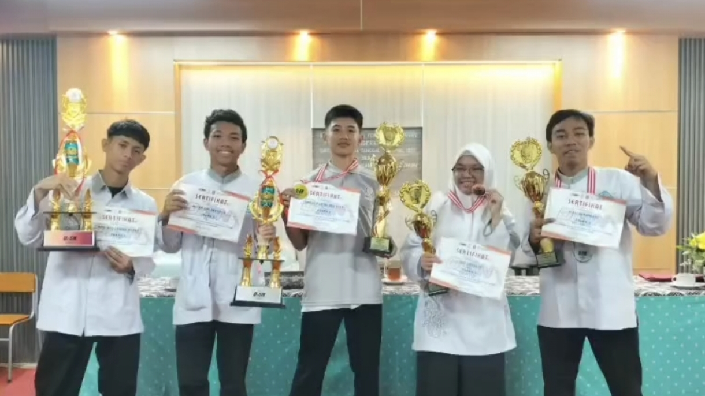

SMKN 1 Tangerang Sukses Borong Medali di O2SN
Senin, 7 September 2026
TANGERANG — Prestasi membanggakan kembali diukir oleh para pelajar berbakat dari SMK Negeri 1 Tangerang Kontingen atlet sekolah yang populer dengan sebutan "Nesta" tersebut sukses memborong berbagai medali dalam ajang bergengsi Olimpiade Olahraga Siswa Nasional (O2SN) Tingkat Kota Tangerang.
Dari empat cabang olahraga yang diikuti, para perwakilan sekolah berhasil menyapu bersih posisi podium teratas. Pada cabang Pencak Silat Putra, medali emas (Juara 1) berhasil diamankan oleh Naufal Mumtaz Adz Dzaki dari kelas XI TKL. Sementara itu, posisi Juara 2 atau medali perak diraih oleh Rizky Ramandha (kelas XII TKJ 2) pada cabang Bulutangkis Putra serta performa solid dari Tim Voli Putra sekolah

Tidak ketinggalan, medali perunggu (Juara 3) turut disumbangkan oleh Siluet Jingga Jifi (kelas XII DKV 1) dari cabang Pencak Silat Putri serta kerja keras dari Tim Futsal Putra kebanggaan sekolah.
Kepala sekolah beserta jajaran guru pembimbing menyampaikan rasa syukur dan apresiasi yang setinggi-tingginya kepada para siswa yang telah berjuang. Capaian gemilang ini diharapkan mampu menjadi pemantik motivasi bagi seluruh siswa SMKN 1 Tangerang lainnya untuk terus mengasah minat, bakat, serta mencetak prestasi baru yang mengharumkan nama sekolah di tingkat yang lebih tinggi.
info lebih lengkap
|